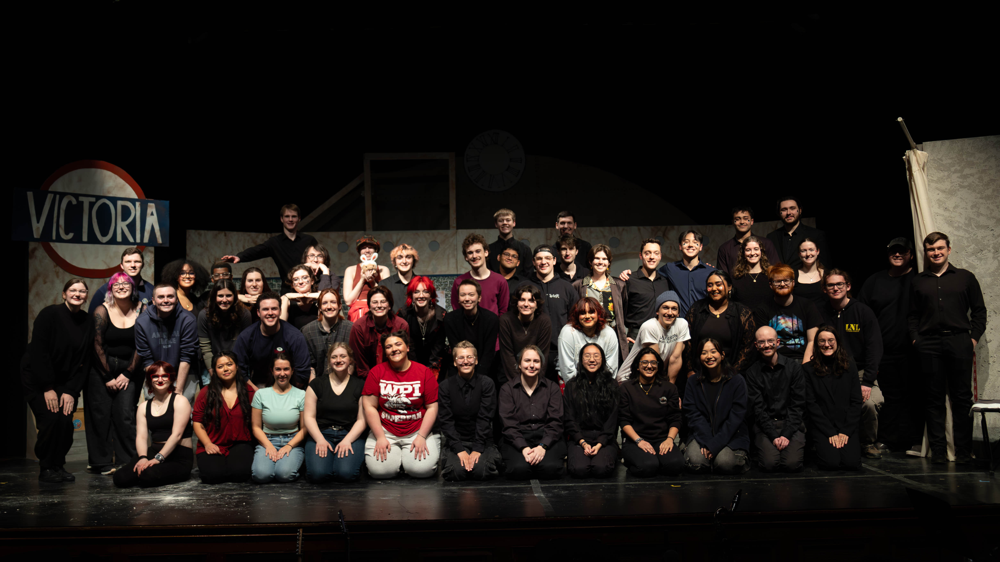
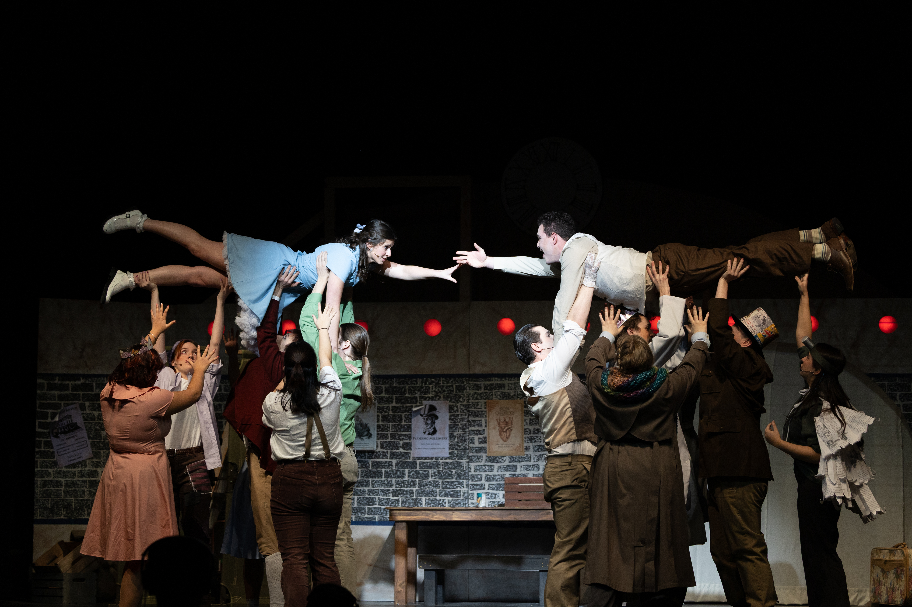
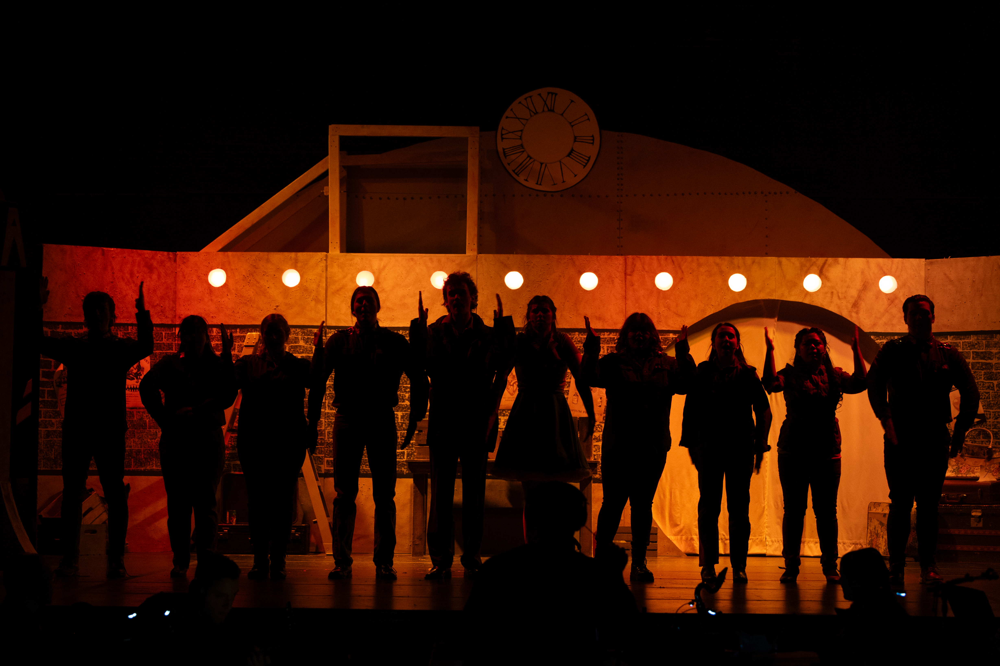
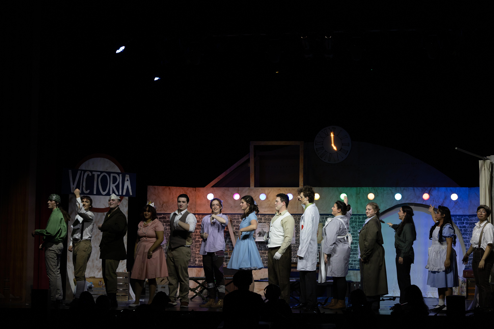

Alice By Heart
Between October of 2025 and January of 2026 I stage managed VOX Musical Theatre's Production of Alice By Heart, a musical adaptation of Lewis Carroll's Alice's Adventures in Wonderland.


Duration
4 months
Role
Stage Manager
Team Size
~65 students
Overview
VOX Musical Theatre is WPI's student-run musical theatre organization. As stage manager, I was responsible for coordinating communication between the director, production team, and cast; managing rehearsal schedules; and ensuring the smooth execution of performances. This role required strong organizational skills, adaptability, and the ability to handle high-pressure situations effectively.
The ability to step into any role if needed was crucial to mitigate any unforseen circumstances. Solving complex problems quickly and effectively under high-pressure, high-stress situations was common and required in-and-out knowledge of the production process and those working on it. I relied heavily on my ability to collaborate and communicate with many people involved in the production, from actors and directors to costume designers and lighting technicians. During production, I was the go-to person for problem solving and mitigation.
Although challenging, the experience was rewarding and the production was a success.
Theatrical Components
Below details the theatrical components of the production, elaborating on my role in each:
- Rehearsal and Design Process: During the rehearsal and design process, much of my work was focused in the rehearsal room, taking blocking notes and creating "rehearsal reports" which communicated updates and needs from the design and production teams. I worked to ensure that all departments were on the same page and fully informed. Once designs were becoming finalized, I reviewed them for and safety or logistical concerns.
- Pre-Tech Period: During this period, production members came back to WPI early during the final week of winter break. This period consisted of intensive rehearsals and technical preparations. I continued to work in the rehearsal room, passing off responsibilities to other team members as needed so that I could focus on the most critical aspects of the production. Most days consisted of finding new problems and coming up with creative solutions to them.
- Tech Week & Performance: DUring tech week and performances, the role of the stage manager shifts from rehearsal oriented to more technical production-focused. Coordination with every technical department is needed to ensure schedules are kept and productions run smoothly. The stage manager is in charge of calling each light and sound cue which occurs during the show verbally to the light and sound board operators which requires clear communication and inside-and-out knowledge of the entire production. This period includes the most high-level production management for the stage manager, and it is personally my favorite part.
Additional Photos
These are some additional photos from the production, showcasing elements such as lighting, costume design, and set design. All photos by @a.flaherty_photography on instagram.

